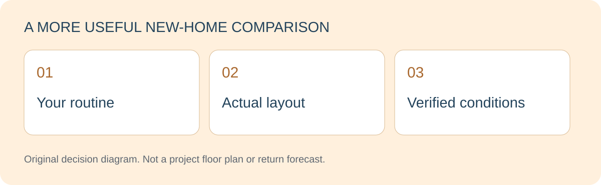

LAYOUTS · DAILY LIFE · NEW PROJECTS
Why Build More Malls? What Living Near One Really Means for Homebuyers
Esther · Real Estate Negotiator · Checked 2026-11-02

Many malls can coexist because they may serve different catchments, experiences and development contexts. That does not prove a new mall will succeed. For a homebuyer, the useful question is whether its services and access genuinely improve everyday life.
Browse this guide
Keep the 118 Mall reference geographically clear
The official 118 Mall website states an opening date of 1 November 2026 and an address on Jalan Hang Jebat, Kuala Lumpur. This is not a JB or Melaka development.
The official introduction presents retail, dining, entertainment and a wider precinct. Those descriptions provide positioning context, not verified operating results or evidence of nearby housing performance.

Why might another mall be developed?
Possible general explanations include a different catchment, a different experience, a broader mixed-use precinct or a new tenant mix. These are analytical possibilities, not statements about the operator’s actual investment decision.
New does not necessarily mean it replaces older malls, nor does it guarantee success. Appropriate occupancy, trading and footfall evidence would be needed before drawing operating conclusions. This guide has no such dataset.
Look for three practical household benefits
Concentrated errands may reduce the need to organise several stops. Dining and meeting places may provide more choices. Some households may value nearby services instead of driving farther for each activity.
Each benefit needs a real check. The relevant shops, usable entrances and family members’ routes matter more than a mall icon on a promotional map. These are possible benefits, not universal outcomes.

Assess the home alongside the convenience
Test the route between the actual residential entrance and the usable mall entrance. Check crossings, shelter, parking and hours, including evening and weekend conditions. Do not apply the mall’s official access description to an unverified home.
Resting conditions, management and ongoing costs still matter. Convenient shopping cannot make an unsuitable layout work, and different households will place different values on the same amenity.
Bring the checklist back to a JB shortlist
A JB-focused buyer does not need to change location because of an out-of-state opening. Apply the same method to JB new projects: distinguish existing services from proposals and test whether your routines benefit.
Tell Esther the intended use, layout, budget and services you rely on. Rental plans require separate tenant evidence. A new mall, a recognisable name or opening crowds do not guarantee appreciation.

Frequently asked questions
Is 118 Mall in Melaka?
No. The official address used here is Kuala Lumpur; no unverified Melaka project has been added.
Do homes near malls always hold their value better?
No guarantee is possible. Purchase cost, property condition, management, demand and market changes need separate assessment.
Why not recommend a nearby project immediately?
A relevant recommendation needs verified project details, actual location, availability and a fit with the buyer’s needs.
Compare JB new projects around the amenities you actually use
Tell me your intended use, occupants and preferred layout. I focus on helping buyers compare relevant new-project information; current stock, specifications and appointments need confirmation.
Ask Esther on WhatsApp ↗WhatsApp: 011-3144 9616
You can edit the message before sending. Clicking does not send it or confirm an appointment.Sources and scope
Checked 2 November 2026. Practical comparisons and hypothetical situations are editorial analysis, not measured market findings. Sources support only the facts described below.
- 118 Mall — official access information — Confirms the Kuala Lumpur location and the stated 1 November 2026 opening date; mall access claims are not applied to homes.
- 118 Mall — official precinct introduction — Background on the stated retail, dining, entertainment and precinct positioning. The development rationale below is general analysis, not the operator’s financial explanation.
No current project price, financing approval, rental outcome or appreciation is promised. Specific sales terms and permitted use require verification.